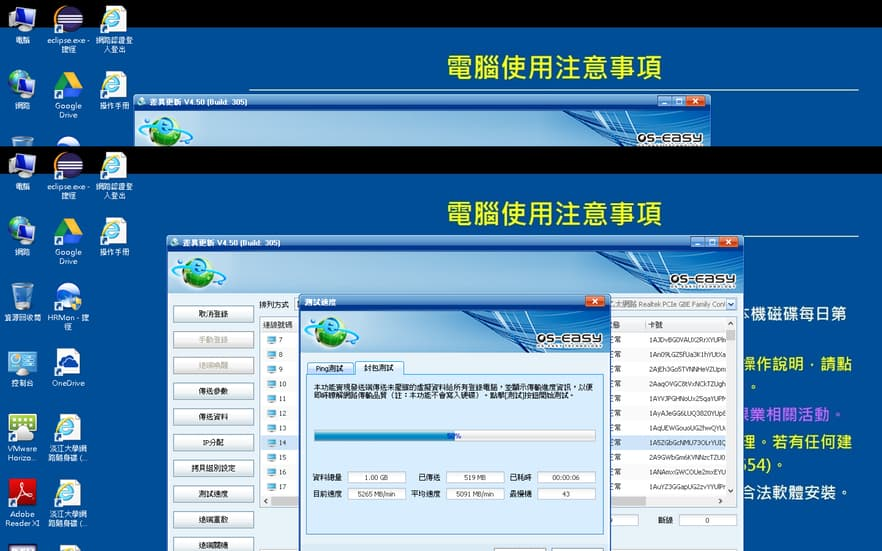
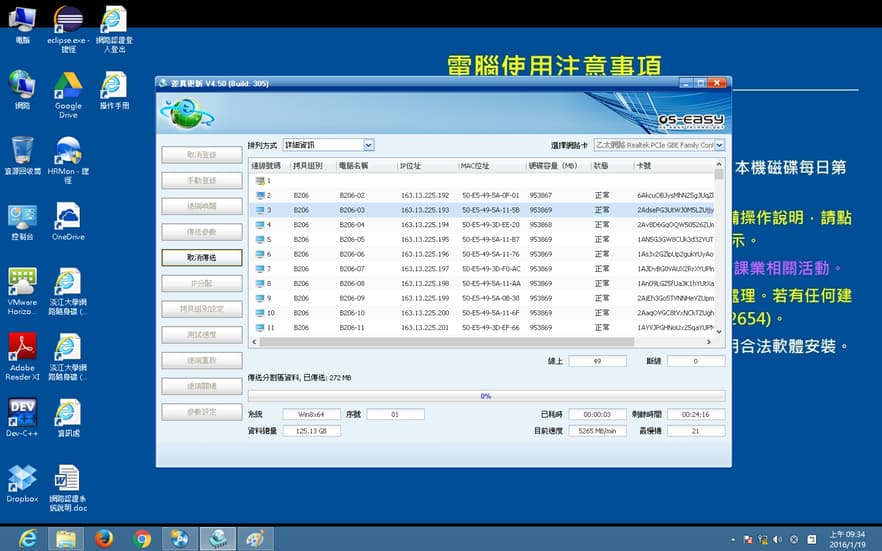

<div class="container">
    <!--  Outer row  -->
    <div class="row">
        <div class="col s12 m9 l10">
            <div id="1" class="section scrollspy">
                <p class="caption">通常在做完更新後，有時間的話會做網路對拷，將更新套用到其他電腦上</p>
                <h3 class="header">準備及注意事項</h3>
                <ol>
                    <li>做網路對拷之前，必須先將機櫃內 Switch 的對外網路線拔掉，對拷完再接回</li>
                    <p>對外網路線：機櫃上編號為 B2XX-A 的網路線 ex. B201-A</p>
                    <li>網路對拷要在保護模式下才能運作</li>
                    <li>做網路對拷之前一定要請大哥看過</li>
                    <li>現在有些比較新的系統，在做完對拷之後，他會自己認證，但重開機之前要先跳線並將對外網路線接回去</li>
                </ol>
            </div>
            <div id="2" class="section scrollspy">
                <h3 class="header">開始對拷</h3>
                <h5>準備對拷</h5>
                <p>通常會選擇２號來做對拷，電腦開機後，點開右下角的狀態列，會發現有一個叫噢易維護系統的程式</p>
                
                <p>滑鼠點兩下後，會跳出一個新的視窗，可以看到現在的保護狀態</p>
                <p>點開噢易功能平台</p>
                <p>Win8點了之後，程式會消失在出現，再重新點一次之後，視窗就會跑出來了</p>
                
                <br>
                
                <p>成功進入後，點選差異更新，並輸入帳號、密碼</p>
                
                <p>先去看看參數設定裡面是否是 Linux 文字模式</p>
                <p>在選擇等待登錄，並且將其他要對拷的電腦一一開機</p>
                
                <p>有連上的電腦都會顯示在這裡面，像圖中 14 號就沒有成功連線</p>
                <p>如果沒有連上的話可以先重新插拔網路線，看看是否為線路問題，如果線路沒問題可以將還原卡拔起來清潔</p>
                
                <p>其他電腦會出現圖片中的畫面，每一條資訊都有顯示出來，才算有成功連上</p>
                
                <p>確認電腦都有連上後，按完成登錄，會跳到這個畫面，準備開始對拷</p>
                
                <h5>開始對拷</h5>
                <p>對拷前先點選左邊的測試速度，選擇封包測試，有些比較舊的版本只有 PING 測試，如果是舊版就可以不用測了，正常速度應該為 2、3000 MB/min～5000 MB/min 左右</p>
                <p>要注意最慢機是否一直是同一台電腦，如果一直都是同一台，通常將主機後網路線和地板網路接口都重新插拔後就會正常了</p>
                
                <p>這裡要傳送哪些資料，請務必確認過在開始傳送，傳送方式正常會選擇完整有效資料，下面對電腦的操作選擇無，不用勾發送端同步執行，確認無誤後，按確定開始對拷</p>
                
                <p>和本機對拷一樣，先等資料成功傳一陣子之後，確認資料有開始在傳、速度沒有問題、最慢機不是一直固定停留在同一台後，便可以放著讓它自己跑完</p>
                
            </div>
            <div id="3" class="section scrollspy">
                <h3 class="header">對拷完</h3>
                <p>當對拷結束後，每台電腦都會自己去改電腦名稱和IP，更改完後每台電腦都會回到保護模式</p>
                <h5>KMS 認證</h5>
                <p>這時便可以利用 1 號電腦去控制其他電腦，利用噢易電腦實驗教學支撐系統（CTSC），程式位置如下，點開後輸入帳號、密碼</p>
                
                <p>選擇全部電腦後，2 號不用選，選左邊的系統切換，將每台電腦切到總管模式，先切換哪一個作業系統沒有關係，有對拷到的系統都要重新做過一次 KMS 認證、改預設印表機</p>
                
                <p>電腦重新開機後，點開右下角的噢易保護系統程式，看看保護狀態是否寫總管模式</p>
                <p>更快的方法是利用噢易電腦實驗教學支撐系統（CTSC），如果畫面中作業系統 real system 字樣消失的話(見下圖)，就代表這台電腦有進到總管</p>
                <!-- 14 15 16截圖要重新截圖 -->
                <p>確認每台電腦都有進入到總管後，便可以開始做KMS認證，認證檔都放在Ｃ:/ipcedu/kms裡面</p>
                
                <ul>
                    <li>有些資料夾名字可能後面會多個 1920－1080 變成 ipcedu1920－1080 ，裡面東西都一樣，認證有Windows和Office兩種</li>
                    <li>一次不要選全部電腦一起做，可以先選 2、30 台或是整間的一半去做，做完一部分，再接下去做剩下的電腦</li>
                    <li>認證失敗的原因：
                        <ol>
                            <li>沒接到網路</li>
                            <li>電腦時間日期不對</li>
                            <li>BIOS版本不同</li>
                        </ol>
                    </li>
                </ul>
                <p>認證跑完後要一台一台檢查認證是否有成功</p>
                <h5>認證成功畫面</h5>
                <p>Windows</p>
                
                <p>Office</p>
                
                <h5>修改預設印表機</h5>
                <p>打開控制台，選裝置和印表機，進去後會看到很多台印表機，看看那台電腦所屬那排印表機是哪一台，在對著那台印表機點右鍵，設定成預設印表機就可以了</p>
            </div>
            <div id="4" class="section scrollspy">
                <h3 class="header">對拷結束</h3>
                <p>KMS 認證、預設印表機都確認修改完後，將每一台電腦利用噢易電腦實驗教學支撐系統（CTSC）的遠端重啟功能，讓每一台電腦重開並回到保護模式</p>
                <p>確認電腦都正常後，再用遠端關機功能，關閉每台電腦</p>
            </div>
        </div>
        <!-- Table of contents -->
        <div class="col hide-on-small-only m3 l2">
            <div class="toc-wrapper">
                <div style="height: 1px;">
                    <ul class="table-of-contents">
                        <li><a href="#1">對拷準備</a></li>
                        <li><a href="#2">開始對拷</a></li>
                        <li><a href="#3">對拷完</a></li>
                        <li><a href="#4">對拷結束</a></li>
                    </ul>
                </div>
            </div>
        </div>
        <!-- end of table contents -->
    </div>
</div>
